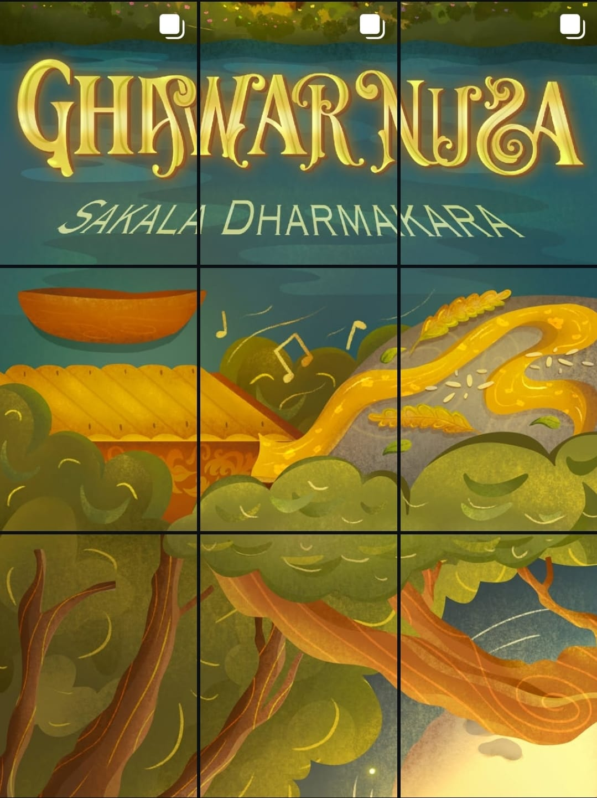

Festival Budaya 2025 : Ghawarnusa
𝐅𝐄𝐒𝐓𝐈𝐕𝐀𝐋 𝐁𝐔𝐃𝐀𝐘𝐀 𝟐𝟎𝟐𝟓: 𝐆𝐇𝐀𝐖𝐀𝐑𝐍𝐔𝐒𝐀
sebuah ruang untuk menafsirkan budaya dari berbagai cara pandang, menjaga keseimbangan, dan merayakan kebhinekaan manusia, alam, serta budaya.
𝐅𝐄𝐒𝐓𝐈𝐕𝐀𝐋 𝐁𝐔𝐃𝐀𝐘𝐀 𝟐𝟎𝟐𝟓: 𝐆𝐇𝐀𝐖𝐀𝐑𝐍𝐔𝐒𝐀
sebuah ruang untuk menafsirkan budaya dari berbagai cara pandang, menjaga keseimbangan, dan merayakan kebhinekaan manusia, alam, serta budaya.
Bakti desa bertujuan untuk mendekatkan siswa dengan alam dan kehidupan desa melalui berbagai kegiatan seperti penanaman pohon, penyuluhan, pengobatan gratis, dan pengelolaan sampah. Program ini melibatkan siswa, guru, dan alumni.
Camprt 2025 merujuk pada kegiatan kemping atau orientasi yang diselenggarakan oleh organisasi atau ekstrakurikuler di SMA Negeri 3 Bandung
Warga 3 merayakan semangat kemerdekaan dengan berbagai aktifitas, mulai dari fun games sampai dengan aktifitas kebersamaan lainnya, diakhiri dengan tampilan ekstrakulikuler Band 3
Kegiatan Manasik Haji Kelas XII SMAN 3 Bandung. Manasik Haji diselenggarakan di Pusat Dakwah Islam (PUSDAI) Bandung, pada tanggal 13 Februari 2025.
Berpedoman pada edaran dan petunjuk Dinas Pendidikan Provinsi Jawa Barat yang mengusung tema Masa Pengenalan Lingkungan Sekolah Ramah bagi seluruh warga sekolah.Pelaksanaan hari pertama, SMAN 3 Bandung dikunjungi oleh Sekda Provinsi Jawa Barat Dr. Drs. Herman Suyatman, M.Si., dan Sekdis Provinsi Jawa Barat Dr. Deden Saepul Hidayat, S.Pd., M.Pd. yang memberikan arahan dan motivasi langsung kepada murid baru SMA Negeri 3 bandung.